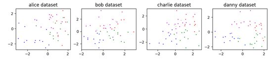
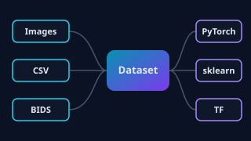
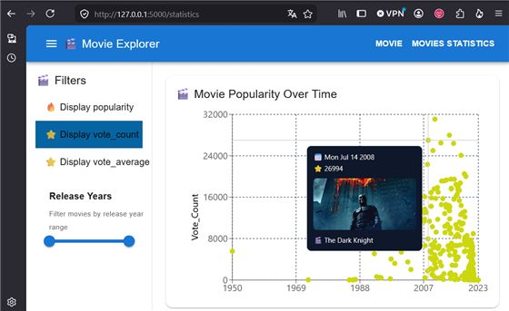
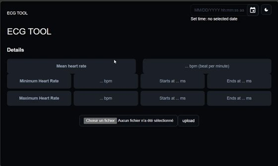
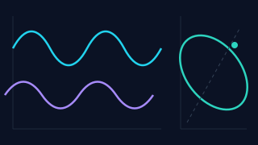

Federated Learning
Federated Learning
Fed-BioMed
Plateforme open source d'apprentissage fédéré pour la santé, déployée dans plusieurs réseaux hospitaliers en France et en Allemagne. Back-end, APIs, pipelines PACS, MLOps.
Une sélection de projets professionnels et personnels. Le code est disponible sur GitHub.
Federated Learning
Plateforme open source d'apprentissage fédéré pour la santé, déployée dans plusieurs réseaux hospitaliers en France et en Allemagne. Back-end, APIs, pipelines PACS, MLOps.

Federated LearningK-means et fuzzy k-means fédérés comparés au k-means local, ACP incrémentale, règles d'association et propagation d'affinité, avec étude de l'hétérogénéité des données.

Architecture logicielleProposition d'architecture pour une API de données unifiée dans Fed-BioMed : extensibilité (BIDS), indépendance vis-à-vis des frameworks ML, préparation à l'analytique fédérée.
 Data engineering
Data engineering
Simulation d'un cycle de vie complet : génération de données synthétiques, validation, transformation Python + SQL, stockage SQLite, traitement incrémental et suite de tests.

Data visualisationChallenge Hi! PARIS : plateforme web pour explorer une base de données de films. Déploiement conteneurisé avec serveur d'application et reverse proxy.

Santé & webApplication web pour importer un enregistrement ECG et calculer la fréquence cardiaque. Front-end React, API Flask, tests back-end.
 Imagerie médicale
Imagerie médicale
Filtrage, segmentation semi-automatique d'anévrismes (Graph Cut, SLIC), deep learning (YOLO) et métriques d'évaluation (Dice, IoU, Hausdorff).

Signal physiologiqueCalibration de bandes de pléthysmographie par régression linéaire multiple, filtres autorégressifs et MLP pour estimer le volume courant, et calcul de l'angle de phase (Konno & Mead).